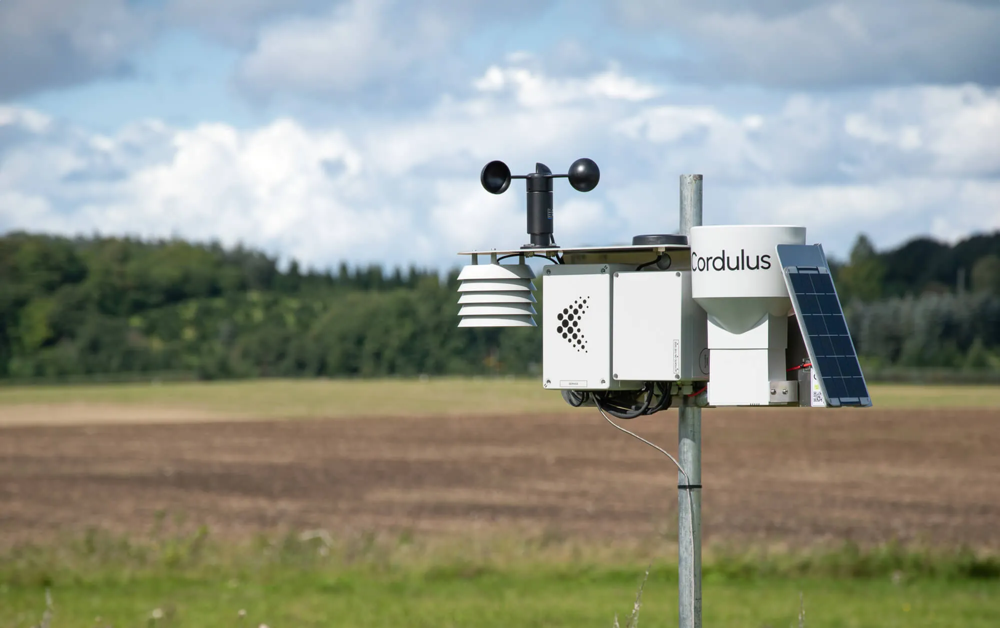
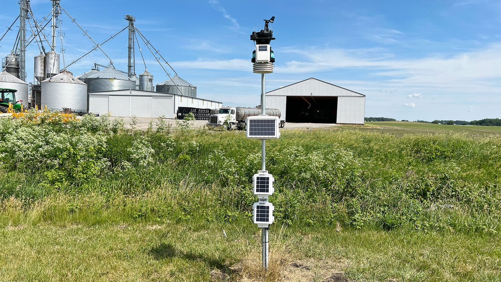

At WeatherWise AI, we advance the frontiers of weather forecasting by integrating machine learning, atmospheric physics, and remote sensing. Our work focuses on developing spatiotemporal models that embed fundamental physical laws into AI systems, enabling accurate, physically consistent, and high-resolution predictions — even in data-scarce environments like Uganda.
With the growing challenges of floods, droughts, and shifting local weather patterns, reliable micro-scale forecasting has become essential for safeguarding agriculture, improving disaster preparedness, and enhancing climate resilience. Through research, innovation, and physics-guided machine learning, we are committed to building next-generation forecasting tools that not only predict the weather but deepen our understanding of atmospheric dynamics to support vulnerable communities.
To empower communities with accurate, physically-grounded weather intelligence, bridging the gap between science and society to build a climate-resilient future.
At WeatherWise AI, we develop next-generation forecasting models that integrate machine learning, atmospheric physics, and remote sensing to deliver high-resolution, interpretable, and actionable weather insights — especially for data-scarce and climate-vulnerable regions.
Spatiotemporal Physics-Informed Machine Learning Model for Weather Prediction in Uganda
Tech Focus: Machine Learning | Remote Sensing | Geospatial Analysis | Physics-Informed Neural Networks
Dive Deeper